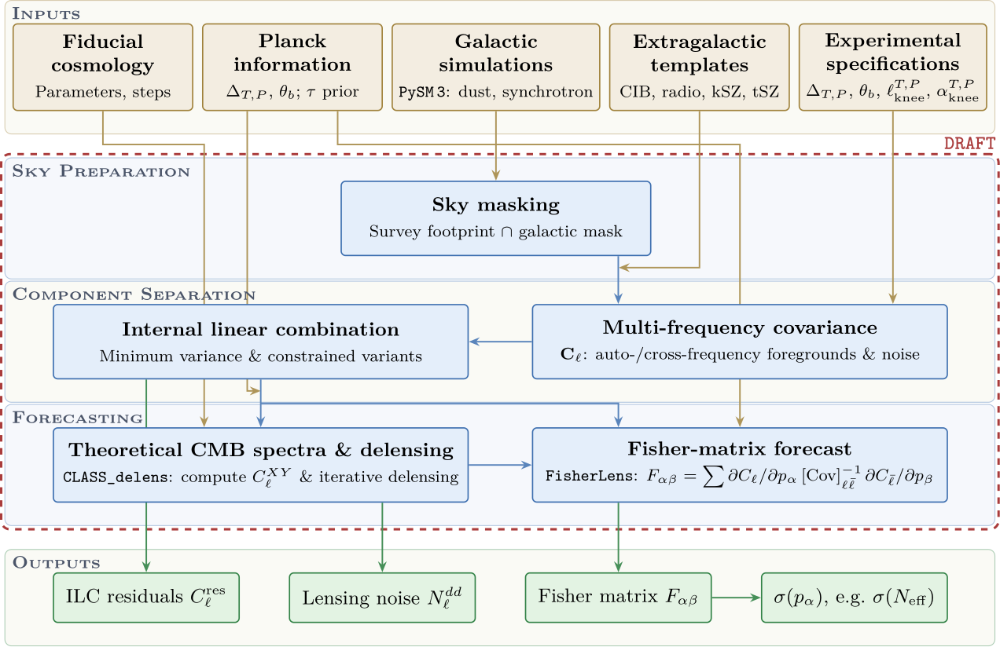

DRAFT: Dark Radiation Anisotropy Flowdown Team forecasting tool
The DRAFT (Dark Radiation Anisotropy Flowdown Team) forecasting tool provides an end-to-end pipeline for cosmic microwave background (CMB) experiments, from experimental specifications to projected constraints on cosmological parameters. It was developed within the Maps-to-Power-Spectra analysis working group of the CMB-S4 collaboration and is described in §3.4 of arXiv:2608.XXXXX. This code is however not specific to CMB-S4, but can be applied directly to other CMB survey designs, and the experiment library already covers configurations for Planck, the South Pole Telescope, the Simons Observatory, CMB-HD and AtLAST alongside the CMB-S4 surveys.
The pipeline targets damping-tail science, where precise measurements at multipoles \(\ell \gtrsim 1000\) carry the constraining power but astrophysical foreground emission also becomes significant relative to the primary signal and where gravitational lensing broadens the acoustic peaks. Foreground modeling, component separation and delensing are therefore all needed to extract the available information. A leading example is the effective number of relativistic species, \(N_\mathrm{eff}\), whose sensitivity is driven by the damping tail and the acoustic peaks.
Pipeline
{kind=link}

Schematic overview of the DRAFT forecasting tool and the pipeline it implements, from the instrumental and astrophysical inputs to the projected sensitivity to cosmological parameters. (Reproduced from arXiv:2608.XXXXX.)
Inputs. The fiducial cosmology together with the parameter step sizes for the numerical derivatives, the Planck information entering through inverse-variance combination of its noise, the galactic dust and synchrotron models, taken from map-based simulations generated with PySM 3, the extragalactic templates for the thermal and kinematic Sunyaev-Zel’dovich effects, the cosmic infrared background and radio galaxies, following a parameterization based on South Pole Telescope measurements, and the experimental specifications of the survey configurations under consideration. See API reference for the modules that supply each of these (and Sections 2 and 3 of arXiv:2608.XXXXX).
Sky preparation. The survey footprint is combined with a galactic mask to remove the most contaminated regions of the sky, which component separation can only partially clean (§3.1 of arXiv:2608.XXXXX).
Component separation. The multi-frequency covariance \(\mathbf{C}_\ell\) of the noise and foreground spectra is assembled from the auto- and cross-frequency spectra, and an internal linear combination optimally combines the frequency bands to extract the required component while down-weighting modes dominated by foregrounds or instrumental noise. The standard minimum-variance, constrained and partial variants are supported [cross-ILC still to be ported], leaving the residual power spectra \(C_\ell^\mathrm{res}\) (§3.2 of arXiv:2608.XXXXX).
Forecasting. The post-ILC noise spectra are passed to CLASS_delens, which computes the theoretical CMB spectra and performs the iterative delensing. The delensed spectra and the lensing-reconstruction noise are then combined in a Fisher-matrix forecast performed by FisherLens to obtain projected constraints on the cosmological parameters. Both codes are driven from within this repository, which treats the surveys and sky patches of a configuration as independent experiments and sums their Fisher matrices (§3.3 of arXiv:2608.XXXXX). The same formalism can also be used to estimate the biases induced in those parameters by residual foregrounds, which is implemented but still experimental.
Outputs. The ILC residuals, the lensing-reconstruction noise, the Fisher matrix \(F_{\alpha\beta}\) and the projected uncertainties on the cosmological parameters, in particular \(\sigma(N_\mathrm{eff})\).
All three stages are implemented in this repository. The intermediate ILC residual spectra are released for a range of survey configurations and can therefore also be used as inputs to other forecasting frameworks, as described in Data and products.
Where to go next
Data and products describes the input data and the released data products together with their file format, which is where to start if you want the released curves without running anything. Installation covers the requirements and the build, Quickstart how to run the two drivers and the arguments they take, API reference the API organized by pipeline stage, and References the literature underlying the models and methods.
Getting started
API reference
Additional information
Indices
Index – all documented functions and terms.
Module Index – the module index.
Search Page – full-text search.